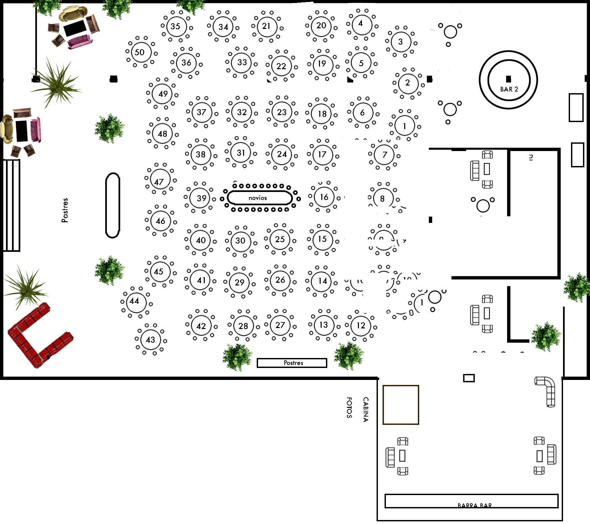

Casa Amelia · 7 de marzo 2026
Matrimonio Walker & Mackenna
Ingresa tu nombre tal como aparece en la invitación para saber tu mesa dentro del evento.
¿Cómo se usa?
- Escanea el QR del evento y abre esta página.
- Escribe tu nombre y presiona “Buscar mesa”.
- Muestra el resultado al anfitrión y dirígete a tu mesa.
Plano del salón
Abre el plano para identificar rápidamente la ubicación de cada mesa.

Tocar para ver en pantalla completa
Versión publicada: https://charlyagenteia-sys.github.io/guest-lookup/.
Para pruebas offline abre index.html o levanta un server con npx serve / python -m http.server.